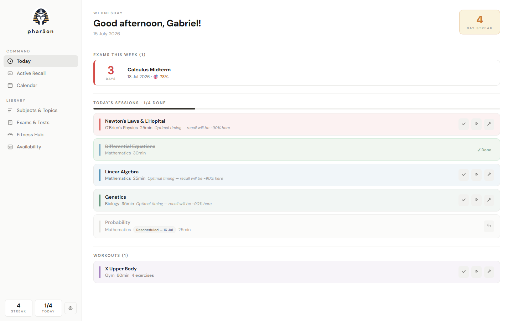
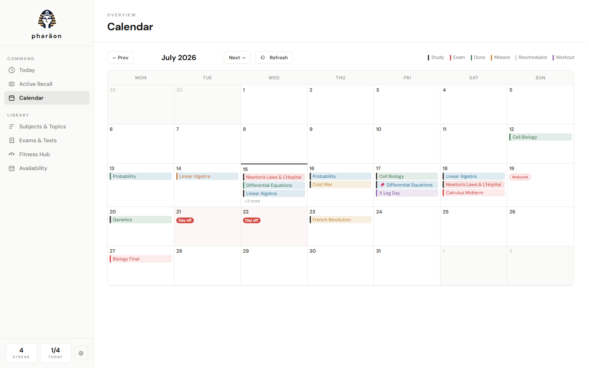
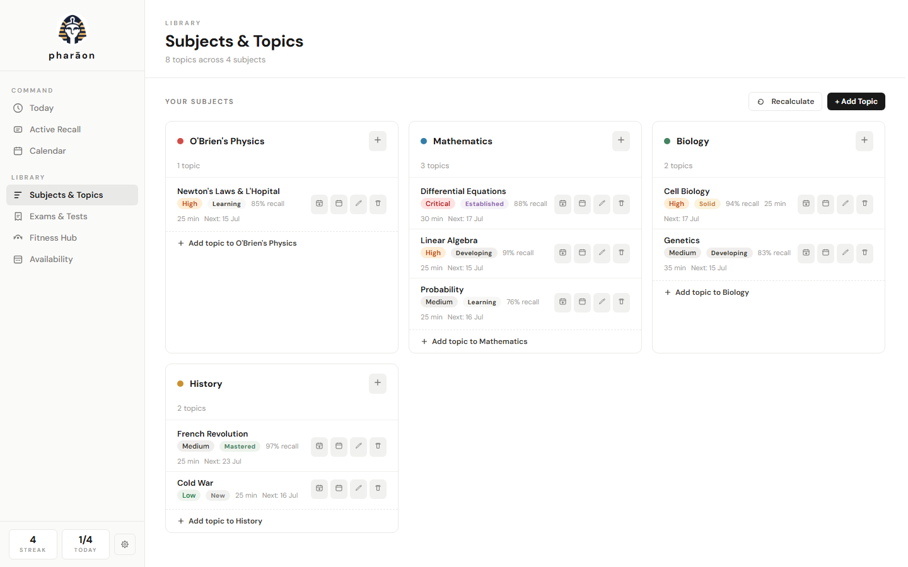
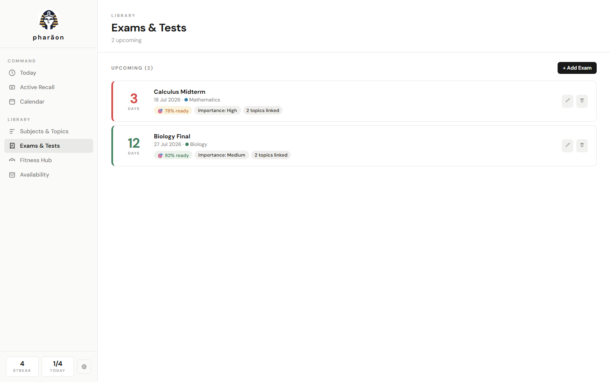

Pharaon is a personal memory engine: tell it what you're studying and it decides when — scheduling every review at the scientifically right moment, balancing your days, preparing you for exams, and making sure nothing you learn is ever forgotten.
Unzip and run — that's it. Shipped as .zip because browsers block
unsigned .exe downloads. On mobile, just open the app and add it to your home screen.

A term means many subjects, each with dozens of topics — and every topic needs to be revisited several times, at the right moments, or it quietly fades. Organising those sessions by hand is practically impossible: plain calendars don't know how memory works, and flashcard apps don't plan your days. The result is always the same — crammed weeks before exams, empty weeks after them, and material studied in October that has vanished by June.
Pharaon closes that gap. It combines a research-backed model of human memory with a scheduling optimizer, so every study session lands exactly where it does the most good — with zero planning effort from you.
Each topic carries a scientific memory state — stability and recall probability on the forgetting curve. Rate each session honestly and watch topics climb the ladder: New → Learning → Developing → Established → Solid → Mastered.
The planner solves your next two weeks as one optimization problem: maximum long-term retention per minute of study, evenly balanced days, mixed subjects, bounded fatigue. Every session shows why it's on its day.
Link topics to an exam and reviews intensify automatically as the date approaches — with a guaranteed final pass and a readiness % predicting your recall on exam morning.
After every review, the engine compares its prediction to what actually happened and calibrates itself. Remember better than the model expects? All intervals stretch. It adapts for as long as you use it.
Days off, reduced days and topic restrictions reshape the plan instantly. Missed sessions come back the next morning as catch-ups, most fragile first. Pin or add sessions by hand — the engine plans around you, never over you.
Sports, workouts and exercises live on the same calendar — with optional smart scheduling that spaces workouts by how hard the last one felt.
Human memory follows a forgetting curve: after you study something, the probability of recalling it decays — quickly at first, slower each time you successfully review. Pharaon tracks that curve for every topic and schedules the next session precisely where reviewing is most efficient: late enough to strengthen the memory deeply, early enough that you still succeed.
Each well-timed review multiplies how long the memory lasts. Intervals stretch from days to weeks to months — so the total work per topic shrinks over time while retention stays above your target. Around that core, an optimizer distributes the load: no ten-session Mondays next to empty Tuesdays, no subject monotony, no overload before exams that could have been smoothed.
The full mathematical specification of the engine ships with the project
(ENGINE.md) — nothing about how your study plan is computed is a black box.



“I stopped thinking about when to study. I open it, do the list, close it. The day before my analysis exam it had already lined everything up.”
— Beta tester, engineering student“The part that sold me is seeing why each session is there. It doesn't feel random — it feels like someone competent planned my week.”
— Beta tester, medicine student“Topics I studied months ago keep coming back right before I'd forget them. That never happened with my old system.”
— Founding teamUsing Pharaon? We'd love to feature your experience — send us your review.
%APPDATA%\Pharaon). No servers, no telemetry, no analytics, no account.Get-FileHash .\PharaonSetup.zip):D4C2D3184395BB4A398AAC51F8B0D9218313C85D2EF5C46699D524D81555895A95EBD64E9358C5D9D50ECCAFEB22DF193E989A64F765D55ACED5B72B62501F06D94142E09E2F45DF8AE555EE8454946CDA50506A65B0A25C13CDE521DF446299Why a .zip? Browsers block downloads of unsigned .exe files — the
download never finishes and you are left with a useless .crdownload file instead. Shipping
inside a .zip makes the download complete normally. Unzip it and run the executable inside.
The checksums of those executables are
97F1F680…E44C3D50 (installer) and 00E9A6E9…22F7D69B (portable).
About the Windows warning: Pharaon is an independent student project and is not yet code-signed (certificates are costly). Windows SmartScreen may therefore show “Windows protected your PC” on first run — choose More info → Run anyway after verifying the checksum above. The full source of truth for what the app does ships with it.
Yes. Pharaon is free to download and use. It was built by students to solve our own problem; we want other students to benefit.
Completely. Pharaon never needs an internet connection — everything, including the scheduling engine, runs on your machine.
The installer adds a Start-menu entry, an uninstaller and optional launch-at-startup. The portable version is a single .exe you can run from anywhere (even a USB stick) with no installation. Both store data in the same place, so you can switch freely.
Yes — and it runs the exact same engine as the desktop app. Tap 📱 Phone & tablet on this page from your phone and add it to your home screen (Android: menu → Add to Home screen; iPhone/iPad: Share → Add to Home Screen). It installs like an app, works fully offline after the first launch, and keeps all data on your device. You can move data between phone and PC with Settings → Data → Export/Import. Prefer a downloadable package? PharaonMobile.zip contains the complete self-hostable app.
Because browsers block downloads of unsigned
.exe files: the download never finishes and you end up with an unusable
.crdownload file. Inside a .zip the download completes normally — just unzip it
and run the executable inside. You can verify the archive with the
SHA-256 checksums.
Nothing is lost. The next morning, missed sessions come back as catch-ups — most fragile memories first — and the whole plan rebalances automatically, respecting your daily limits.
Yes — skip a session to the next open day, pin it to any date (the engine will never move a pinned session), or add extra sessions on top of the plan. The optimizer replans everything else around your choices.
Flashcard apps space individual cards but don't plan your days. Pharaon works at the topic level and builds your actual daily calendar — balancing workload, exams, days off and your other commitments in one plan.
In a local database at
%APPDATA%\Pharaon. Settings → Data lets you export a full JSON backup and import it on any
other machine.
Wonderful — tell us! Use
Report a bug or
Contact support.
Errors are also logged locally (%APPDATA%\Pharaon\logs) to help us help you.
Free for Windows 10/11 · no account · your data never leaves your computer